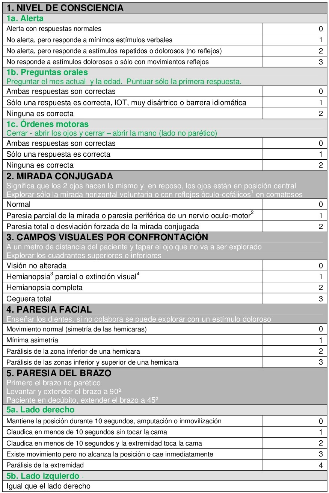

Cuidados del paciente con Stroke
El ICTUS o accidente cerebrovascular (ACV) es una emergencia, que puede tener consecuencias graves e incluso mortales si no se trata rápidamente, por esto, es importante que el personal de salud de AEP este capacitado para identificar los síntomas de ICTUS y seguir un protocolo de tratamiento adecuado. En este protocolo se describirán los pasos a seguir en caso de un paciente con síntomas de ICTUS en la guardia de urgencias.
En la siguiente guía se indicará el manejo adecuado del paciente con Stroke cuando ingresa al servicio AEP.
- a- Al ingreso del paciente activar el código ACV: en caso de sospecha de ACV se activa el código de stroke de inmediato. El medico debe notificar al equipo de emergencias (equipo especializado en ACV).
- b- El medico debe utilizar escala de NIHSS evaluando la gravedad del ICTUS.
- c- Evaluación neurológica: el medico realiza la evaluación neurológica inmediata del paciente para determinar si el paciente esta experimentando un ACV, esto incluye evaluación de la conciencia, lenguaje, fuerza muscular, reflejos, coordinación.
- d- Glucemia: se debe realizar la medición de glucemia del paciente ya que los niveles elevados de glucosa pueden imitar síntomas de ACV.
- e- Evaluación de los antecedentes médicos: evaluación completa de los antecedentes médicos del paciente. Incluyendo cualquier medicamento que tomando para determinar si hay factores de riesgo para un ACV.
- f- Realizar TAC de forma inmediata para determinar tipo de ACV y la ubicación de la lesión.
- a- Oxigenoterapia con cánula nasal.
- b- Colocar dos vías periféricas con abbocath N° 18.
- c- No colocar sondas vesicales ni sondas nasogástricas hasta que no se diagnostique el tipo de ACV por TAC.
- d- Control de la tensión arterial, se recomienda TAS debajo de 185 mmHg y TAD menor a 110 mmHg.
- e- Evaluación trazado cardiaco: evaluar si el paciente presenta FA, esto aumenta el riesgo de ICTUS.
- f- El paciente debe ser monitorizado continuamente hasta ser derivado a la unidad donde se realizará según criterio de elegibilidad trombólisis con activador tisular del plasminógeno, según las directrices de la American Heart Association (AHA), si el paciente es elegible para trombólisis, debe ser administrado en la unidad adecuada lo antes posible.

Es un medicamento trombolítico que se utiliza para tratar el ICTUS isquémico agudo. El nombre completo de medicamento es Activador Tisular del Plasminógeno Recombinante (rt-PA).
Este medicamento se administra por vía venosa y funciona disolviendo los coágulos que bloquean el flujo sanguíneo en el cerebro, lo que permite que el flujo sanguíneo se restablezca y el cerebro reciba el oxigeno y los nutrientes necesarios para su funcionamiento.
El rt-PA es el único medicamento aprobado por la FDA para el tratamiento del ICTUS isquémico agudo y esta indicado para su uso en pacientes que cumplen con ciertos criterios de elegibilidad, como la duración del tiempo desde el inicio de los síntomas y la edad del paciente.
Por los riesgos de hemorragia y otros eventos adversos debe ser administrado cuidadosamente en un lugar adecuado y con un equipo especializado de seguimiento cercano.
La puntuación NIHSS se utiliza frecuentemente como herramienta de evaluación clínica para determinar la fase aguda de los pacientes con ictus, acordar el tratamiento adecuado y predecir el resultado de los pacientes. Sin embargo, a menudo vemos que los profesionales sanitarios administran el examen o puntúan la escala de forma incorrecta, lo que puede llegar a ser perjudicial para el resultado clínico del paciente.
La susodicha puntuación NIHSS puede verse en la siguiente tabla:
